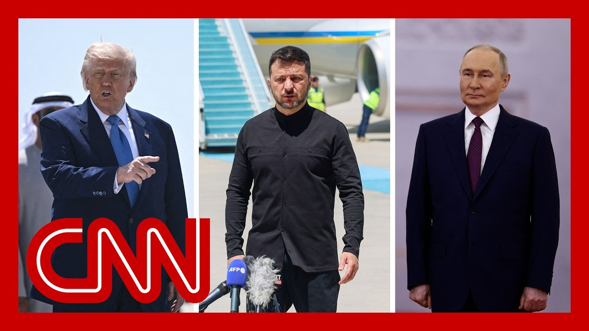

【特朗普表示将于周一与普京通电话】
Summary: President Trump announced plans to discuss Ukraine with Russian President Vladimir Putin and Ukrainian President Volodymyr Zelensky, following recent lower-level talks between Ukraine and Russia that yielded a prisoner swap but no major progress toward peace.
摘要： 特朗普总统宣布计划与俄罗斯总统普京和乌克兰总统泽连斯基讨论乌克兰问题，此前乌克兰和俄罗斯最近进行了较低级别的会谈，达成了囚犯交换协议，但在和平方面没有取得重大进展。

⏱️ Estimated Reading Time: 13 min
President Trump just moments ago posted that he is planning to speak with Russian President Vladimir Putin by phone on Monday.
特朗普总统刚刚发文称，他计划于周一与俄罗斯总统弗拉基米尔·普京通电话。
CNN correspondent Julia Benbrook is at the White House for us today.
CNN记者朱莉娅·本布鲁克今天在白宫为我们进行报道。
Julia, this announcement following Trump's comments this week where he said that only he and Putin can end this war.
朱莉娅，这一声明是在特朗普本周发表评论之后发布的，他表示只有他和普京才能结束这场战争。
So what is planned or expected for this phone call?
那么这次电话通话的计划或预期是什么？
Well, President Donald Trump announced what he hopes will be a productive day of discussions on Monday.
唐纳德·特朗普总统宣布，他希望周一的讨论将是富有成效的一天。
He says that he will be having a phone call with Russian President Vladimir Putin at 10 a.m..
他表示，他将于上午10点与俄罗斯总统弗拉基米尔·普京通电话。
And then following that phone call, he plans to speak with Ukrainian President Volodymyr Zelensky as well as various members of NATO.
随后，他还计划与乌克兰总统弗拉基米尔·泽连斯基以及北约多位成员通话。
Now these conversations come after representatives from Ukraine and Russia had their first face to face talks in three years.
这些对话是在乌克兰和俄罗斯代表三年来首次面对面会谈之后进行的。
They had direct talks at a lower level than expected, but they were able to agree to.
他们的直接会谈级别低于预期，但双方达成了协议。
A prisoner swap, however, did not seem to make any significant progress.
然而，囚犯交换似乎并未取得任何重大进展。
When it comes to a peace deal.
在和平协议方面。
And that meeting took place after there was a lot of speculation on who might be attending that meeting.
这次会议是在外界对与会者身份进行大量猜测之后举行的。
At one point there were thoughts that Zelenskyy, Putin and maybe even Trump could have a seat at that table.
曾有人认为泽连斯基、普京甚至特朗普可能会出席。
While Zelenskyy ended up sending his defense minister to have these conversations, he criticized Putin for not sending any real decision makers to have that conversation.
尽管泽连斯基最终派出了国防部长进行对话，但他批评普京没有派出真正的决策者参与会谈。
Now, the U.S. has said that they don't believe that there will be a significant breakthrough on a cease fire until Trump and Putin can have a conversation.
美国表示，他们认为在特朗普和普京对话之前，停火不会有重大突破。
As you mentioned, while speaking with reporters in the Middle East, Trump said this.
正如你所提到的，特朗普在中东对记者发表了这样的言论。
He said, quote, I don't believe anything is going to happen.
他说：“我不认为任何事情会发生。”
Whether you like it or not, until he and I get together.
“不管你喜欢与否，除非他和我见面。”
Now, the Europeans and the U.S. have been really trying to put pressure on Putin to accept a 30 day ceasefire deal.
目前，欧洲和美国一直在努力向普京施压，要求他接受30天的停火协议。
And following those direct talks that took place on Friday, Zelensky said that it is crucial that pressure be maintained on Russia.
周五的直接会谈后，泽连斯基表示，继续对俄罗斯施压至关重要。
Now, again, Trump said that he hopes that these conversations will be productive and that there will be a ceasefire deal come out of that.
特朗普再次表示，他希望这些对话将富有成效，并达成停火协议。
He expects to speak on the phone with Putin first at 10 a.m. on Monday.
他预计将于周一上午10点首先与普京通电话。
Now, he did speak with Zelenskyy following those direct talks as well.
此外，他在直接会谈后也与泽连斯基进行了通话。
So these have been ongoing conversations.
因此，这些对话一直在进行中。
But he's put a lot of pressure and a lot of anticipation on this conversation with his Russian counterpart.
但他对与俄罗斯领导人的这次对话施加了很大压力并寄予厚望。
All right. at the White House, thanks so much.
好的，非常感谢来自白宫的报道。
We're also learning this morning that U.S. Secretary of State Marco Rubio is discussing Ukraine with the Vatican while he is there for Pope Leo's inaugural mass tomorrow.
我们还了解到，美国国务卿马可·鲁比奥正在梵蒂冈讨论乌克兰问题，他将在那里参加教皇利奥的明日就职弥撒。
With us now, Jane Harman.
现在与我们连线的是简·哈曼。
She's a former Democratic U.S. representative from California and a former ranking member of the House Intelligence Committee.
她是加利福尼亚州前民主党众议员，也是众议院情报委员会前高级成员。
Congresswoman Harman, always great to see you.
哈曼议员，很高兴见到你。
Thank you.
谢谢。
Fred.
弗雷德。
So how much faith do you have in this scheduled phone call for Monday between Trump and Putin?
你对特朗普和普京周一计划中的电话通话有多大信心？
Trump is coming off a high, in the Gulf states, and feels very confident that he can, singularly, change all these conflicts.
特朗普在海湾国家取得了一些成就，他非常自信地认为自己可以单独改变所有这些冲突。
But I think, a lot of skepticism is in order.
但我认为，需要保持很多怀疑。
Vladimir Putin, has been playing Trump for a long time.
弗拉基米尔·普京长期以来一直在玩弄特朗普。
and I can't see how he would be interested.
我看不出他会有兴趣。
I don't think he is interested in, in, making a deal that would involve, in any way compromising what he has and what he aspires to.
我不认为他有兴趣达成任何可能损害他现有利益和野心的协议。
What does he aspire to?
他的野心是什么？
All of Ukraine and then Europe following that?
整个乌克兰，然后是欧洲？
I mean, that's the the goal he's outlined for years and years and years.
这是他多年来一直明确的目标。
So he's he's increasing his, arsenal of, of of, things to use in the war with Ukraine.
因此，他正在增加用于与乌克兰战争的武器库。
A cease fire would give him even more opportunity.
停火会给他更多机会。
He's working with China, Iran, and, North Korea, to, get even more stuff, drones and other things.
他正在与中国、伊朗和朝鲜合作，获取更多无人机和其他物资。
And so I just I don't see this.
所以我看不到这一点。
and I, I can imagine Trump would, threaten him with secondary sanctions.
我可以想象特朗普会用次级制裁威胁他。
That's a good thing to do if he follows through on secondary sanctions, something Congress is interested in.
如果他真的实施次级制裁，那将是一件好事，国会对此很感兴趣。
that would have a big impact on Russia's economy, which is not that strong.
这将对俄罗斯经济产生重大影响，而俄罗斯经济并不那么强劲。
So, you know, I'm for that, but I don't see a deal coming out of this.
所以我支持这一点，但我认为这次不会达成协议。
I think it's a very different, situation from what Trump was doing with the with the Arab states.
我认为这与特朗普在阿拉伯国家所做的情况非常不同。
It's interesting that Peggy Noonan today says, China's foreign policy in the Middle East is hates war, loves gold.
有趣的是，佩吉·努南今天说，中国在中东的外交政策是“厌恶战争，热爱黄金”。
And that seem to work out pretty well.
这似乎效果不错。
Right.
是的。
But but Israel is still a problem.
但以色列仍然是个问题。
Iran the no deal yet.
伊朗尚未达成协议。
but some progress.
但有一些进展。
I would say, in Syria against the Houthis.
我认为在叙利亚对抗胡塞武装方面。
India.
印度。
Pakistan.
巴基斯坦。
so I would give them some wins, but I think this one, is going to be much tougher than he thinks.
所以我承认他们取得了一些胜利，但我认为这次会比他认为的更加艰难。
Trump's approach, particularly in the Middle East, is much more transactional.
特朗普的做法，尤其是在中东，更加注重交易。
business, deals, right where the apex, and central to his mission.
商业、交易，这是他使命的核心。
So as it pertains to Putin, what possibly and I know you said you, you know, you have, low expectations about what could really be offered, but what would Trump be offering that would further incentivize or that would incentivize Putin at all to whether it be to commit to a cease fire or completely end the war?
那么关于普京，特朗普可能会提供什么？我知道你说过你对可能的提议期望很低，但特朗普会提出什么来进一步激励或完全激励普京，无论是承诺停火还是彻底结束战争？
I mean, because the president is talking that he can very confidently end it all, but what could he possibly say to a Putin?
因为总统表示他非常有信心结束这一切，但他能对普京说什么呢？
to change the tone and the approach that Putin has on his war in Ukraine?
以改变普京在乌克兰战争中的态度和做法？
Well, no sanctions, other kinds of preferences, deals for critical minerals.
比如取消制裁、其他优惠条件、关键矿产交易。
things of that kind to get Putin to back off some of his claims.
这类东西可以让普京放弃一些主张。
but unless, first of all, Ukraine agrees.
但首先，除非乌克兰同意。
Let's understand, Ukraine is the is the aggreived party.
我们必须明白，乌克兰是受害方。
Russia invaded a sovereign country, and there's just no, no, no controversy about that.
俄罗斯入侵了一个主权国家，这一点毫无争议。
Except perhaps if Donald Trump may not agree with that.
除非唐纳德·特朗普可能不同意这一点。
But certainly the whole world agrees with that.
但全世界都同意这一点。
he could offer all that.
他可以提供所有这些。
but then Putin would have to give up, or at least temporarily put aside, his aspirations to a a Greater Russia.
但普京必须放弃或至少暂时搁置他对“大俄罗斯”的野心。
You know, make Russia great again.
你知道，“让俄罗斯再次伟大”。
Even.
甚至。
Oh, sorry, I lost you.
哦，抱歉，我失去信号了。
Even if it happens, I don't see Putin following through.
即使发生这种情况，我也不认为普京会兑现承诺。
I mean, if there is a deal and.
我的意思是，即使达成协议。
But there is no, way to police the border that Russia agrees to and Ukraine agrees to.
但没有办法监督俄罗斯和乌克兰同意的边界。
Russia's just going to move on into Ukraine later.
俄罗斯以后还是会继续入侵乌克兰。
He's violated every deal he's made since 1994 to respect Ukraine's sovereignty.
自1994年以来，他违反了所有尊重乌克兰主权的协议。
So what do you suppose European allies are thinking now, or what kind of hopes do they have on this phone call between a Trump and Putin?
那么你认为欧洲盟友现在在想什么？他们对特朗普和普京之间的这次通话抱有什么希望？
Do they feel that that would undermine whatever progress they feel they made while they were visiting, together collectively with the president of Ukraine in Kyiv just barely a week ago?
他们是否认为这会破坏他们一周前与乌克兰总统在基辅共同访问时取得的进展？
Well, I think they feel they need to be at the table.
我认为他们觉得自己需要参与其中。
They are helping, Zelensky, have better cards to talking Trump speak.
他们正在帮助泽连斯基在与特朗普对话时拥有更好的筹码。
they really are.
确实如此。
And NATO matters here because, NATO is is the next move after Russia moves through Ukraine.
北约在这里很重要，因为俄罗斯通过乌克兰后的下一步就是北约。
So they have skin in the game.
所以他们也有利害关系。
They also are trying to do more and they need to do more, to provide aid to Ukraine.
他们也在努力做更多，并且需要做更多，以向乌克兰提供援助。
they can provide military assets, financial aid, etc., which Ukraine desperately needs.
他们可以提供军事资产、财政援助等，这些都是乌克兰迫切需要的。
so, I'm, I think they're hoping that this, this phone call, I think followed by another call with Zelensky and maybe with them, will will put something on the table that they can agree to, but I'm skeptical.
所以我认为他们希望这次通话，随后与泽连斯基甚至他们的另一次通话，能提出一些可以达成一致的内容，但我持怀疑态度。
I just don't see Putin, that interested.
我只是不认为普京有那么感兴趣。
And Putin got a lot of cards.
而且普京手中有很多牌。
He just had a major military celebration with XI Jinping there.
他刚刚与习近平举行了一场盛大的军事庆祝活动。
I mean, Trump's now going to have one.
特朗普现在也要举行一场。
He's trying to match it.
他试图与之匹敌。
But I wonder if he's going to have Putin and XI Jinping at the one in the United States.
但我想知道他是否会在美国的活动中邀请普京和习近平。
I wonder how that would play politically for United States even try.
我想知道这对美国政治会产生什么影响，甚至是否会尝试。
That would be interesting indeed.
那确实会很有趣。
And to say the very least.
至少可以这么说。
All right, Congresswoman--
好的，议员女士——
I know you're not I know you're not.
我知道你不是。
But that's an interesting idea out there, right.
但这是一个有趣的想法。
Congresswoman Jane Harman, great to see you.
简·哈曼议员，很高兴见到你。
Thank you so much.
非常感谢。
You too.
你也是。
Take care.
保重。